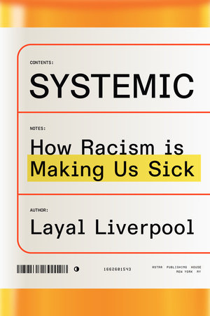

Layal's debut book Systemic is an investigation of the shocking and insidious ways in which racism harms
health - and an exploration of how we can tackle the problem to create a fairer and healthier world. It is out now.
Systemic: How Racism Is Making Us Ill
Bloomsbury Publishing, UK
6 June 2024

Systemic: How Racism Is Making Us Sick
Astra House Publishing, US
18 June 2024

Hoe racisme ons ziek maakt: over gezondheid en medische ongelijkheid
Atlas Contact, NL
24 September 2024

Racism kills: Wie systemischer Rassismus der Gesundheit schadet und was wir dagegen tun können
Aufbau Verlag, DE
15 October 2024
Praise for Systemic
“A bracing, informative read that illuminates the grim social reality of racism and its effects” — The Guardian
“Unearths the shocking facts about health threats to people of colour” — The Observer
“Outstanding” — Nature
“A groundbreaking, brilliantly argued book that debunks the myth that illness is the great equaliser” — Siddhartha Mukherjee, bestselling author of The Emperor of All Maladies, The Gene and The Song of the Cell
“Packed with compelling stories and fascinating details which are harnessed to make an impassioned argument for a better world” — Chris van Tulleken, bestselling author of Ultra-Processed People
“A powerful examination on racism in healthcare” Annabel Sowemimo, author of Divided
“A prescription that everyone needs” — Raj Patel, co-author of Inflamed
“Lays bare the many historical and cultural barriers to medical justice” — Jenny Mitchell, author of Map of a Plantation
“A damning investigation” — Publishers Weekly
“A powerful argument for a more equitable approach to health care” — Kirkus Reviews
“Traces the historical legacy of racial inequities in medicine and reveals disturbing trends that still persist in medical education and research” — Live Science
“Captivating” — Sadé Magazine